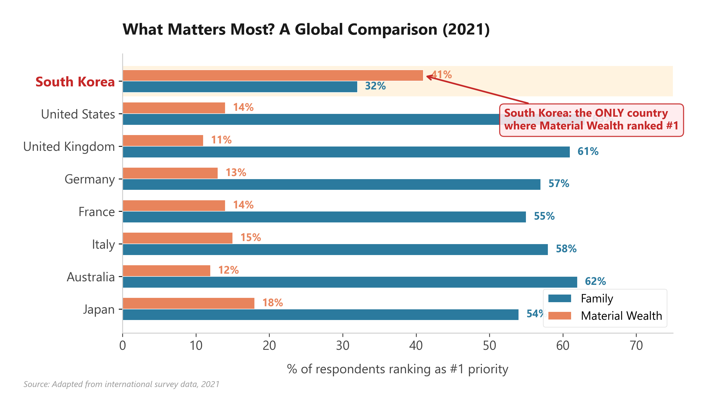

Years ago, I came across a book called The Origins of Happiness by Professor Eun-Kook Suh of Yonsei University. From the first page to the last, I couldn't put it down. The next day, I picked it up and read it again — the afterglow was still so vivid. I remember even chasing down the references afterward.1
The most memorable part of Professor Suh's book was the finding that physical pain and social pain activate the same regions in the brain. The agony of losing a leg in a sudden accident and being unable to earn a living is remarkably similar to the pain of being cut off from your group and facing the world alone. When social pain strikes — loneliness, betrayal, the sting of a breakup, the severing of a relationship — the brain produces real, physical pain to prevent isolation. In one study, sixty-two college students were divided into two groups: one received a painkiller (acetaminophen, known in the U.S. as Tylenol), and the other a placebo. The students who took Tylenol reported feeling significantly less pain from social rejection and relationship disconnection.2
The most shocking conclusion of the book was this: it is not successful people who are happy, but happy people who become successful. Drawing on sociobiological evidence, the author argues forcefully that — contrary to what we believe — success does not bring happiness. We often tell ourselves, "I may be struggling now, but just you wait. I'm going to succeed, and then I'll finally be happy." This narrative is borrowed endlessly by TV dramas and movies, offering cathartic, feel-good endings to frustrating, drawn-out storylines. But it turns out this isn't true.
Extroverts Are Happier
When I recently reread this book through the lens of my oxytocin research, an entirely different passage jumped out at me. It was the finding that the genes most closely linked to human happiness are those associated with extroversion. Extroverts are significantly happier than introverts. Even introverts report greater happiness when they are with someone rather than alone. This has been confirmed by multiple studies. A joint U.S.-Korean study found that the happier a person was, the more time they spent with other people rather than alone. Conversely, unhappy people spent far more time alone. The takeaway is straightforward: to be happy, you need to spend more time with other people.3
Some readers might think, "But I'm happier when I'm alone." Fair enough — but there is a crucial difference between choosing to be alone and having no choice. Being alone by will and preference is nothing like wanting to see people but being unable to, or avoiding others because of pain, insecurity, or depression. Just as being unmarried by choice is different from being unable to find a partner, voluntary solitude and involuntary isolation are entirely different things.
In a 2021 global survey asking people what matters most in life, Korea was the only country where "material wealth" topped the list. In nearly every other developed nation — the United States, the United Kingdom, Germany, France, Italy, Australia, Japan — "family" came first. Korea may be the only country in the world where "Get rich!" is a standard greeting and well-wish. This tells us something profound about why Korea's suicide rate is so high and its birth rate so low. If a nation's priorities reflect its people's consciousness and happiness, then perhaps Koreans have been looking for happiness in the wrong place entirely.
Oxytocin Is the Glue of Relationships
If extroverts are happier, could it be that people with higher oxytocin levels are happier too? There is already ample research showing that highly extroverted people are happier. The question is the relationship between oxytocin and extroversion. Since oxytocin is a peptide hormone, it requires a receptor to function. When mutations occur in that receptor, oxytocin's effects diminish regardless of how much is circulating in the blood. So do people with mutations in the oxytocin receptor gene rs53576 have reduced empathy and lower sociability?
Yes, they do. Research has confirmed that people with mutations in their oxytocin receptors have lower emotional stability and reduced general sociability. They also showed diminished ability to consider other people's perspectives. In other words, if your oxytocin receptors aren't functioning properly, you may struggle to understand others or pick up on nonverbal cues — and as a result, you naturally become less social and more introverted.
Consider the classic relationship scenario: a girlfriend sulks and says, "Do I really have to spell it out for you?" while her boyfriend stands there bewildered. Oxytocin might actually explain this. Women produce four to five times more oxytocin than men, which means they are far more attuned to nonverbal communication — and understandably frustrated when their partner can't read those signals.
Oxytocin in our bodies enables us to empathize with others' pain and joy. People with higher oxytocin levels are more caring, more encouraging, more trusting, and quicker to forgive. And here is the really fascinating part: when we are kind to someone and see them light up with happiness, our own oxytocin levels rise even further. Oxytocin operates on a virtuous cycle. People with high oxytocin levels unconsciously raise the oxytocin levels of those around them.
So what if your oxytocin levels are low? Does it mean you are destined to be introverted and unhappy? Not at all. There are countless ways to boost oxytocin production.